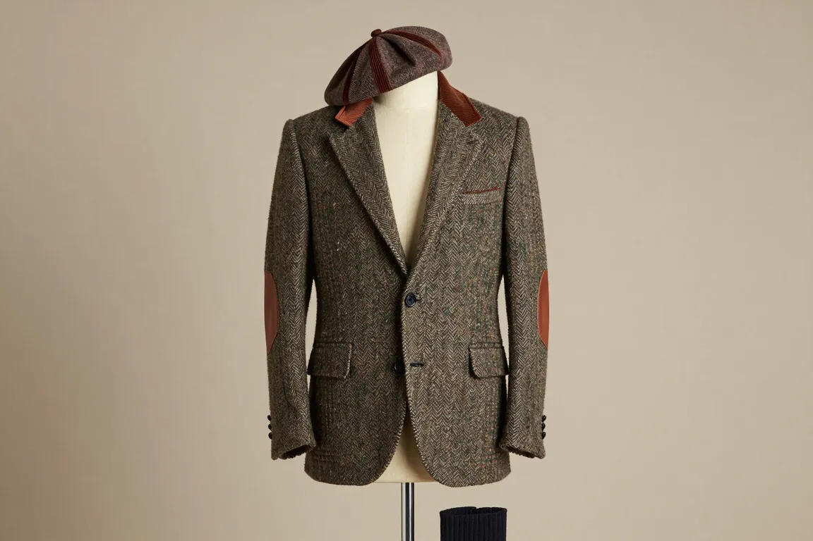

mote · 1860–1939 · også: Høylands-sportsdrakt, Godstweed, Drakt for jakt og fiske
Den ru ulldrakten til godseieren i marka. En løs tweedjakke, knebukser eller plus-fours, en strikket genser og tunge støvler, skåret for åsen, heia og elva.

Kjerneidé
Kle deg for været, og sett sporten først. En tykk ullkypert avviser regn, skjuler skitt og smelter inn i lyngen, så den gjør jobben til en frakk. Alder gjør den bedre.
Designprinsipper
Skjær jakken 5 til 8 cm vid i brystet, slik at armen kan løfte en børse.
Legg folder i ryggen fra bærestykket for å gi 6 cm rom ved skulderbladet.
Sett kneet på buksene 10 cm under kneleddet for en plus-four, for å gi rom til skrittet.
Velg et stoff på 450 til 650 g per kvadratmeter som tåler en dags regn.
Tilpass rutene til terrenget: en mørk, liten rute for skogen, en lys, dristig rute for åpen li.
Legg til en oppsydd lomme med klaff på hver side; bruk skinn på albuen og mansjetten.
Bruk knapper av skinn eller horn som holder under belastning.
Antimønstre
Et glatt, blankt byddress-stoff
Et stramt, kort snitt som sperrer armen
Lyse, klare farger som skiller seg ut mot lia
Tynt stoff som slipper gjennom regnet i første byge